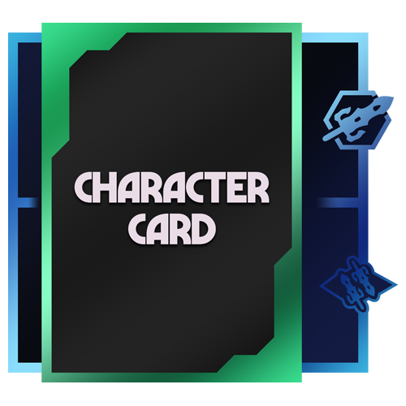
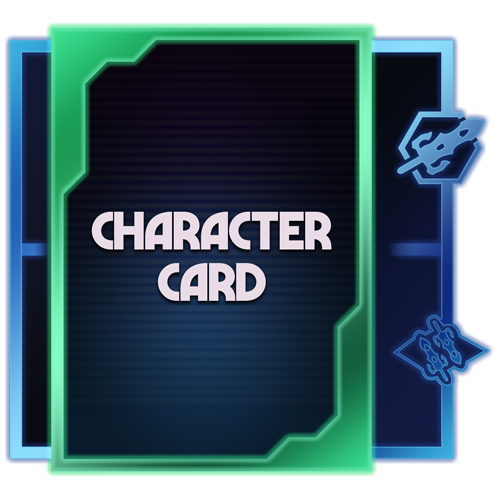
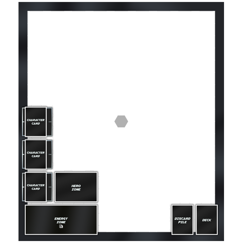
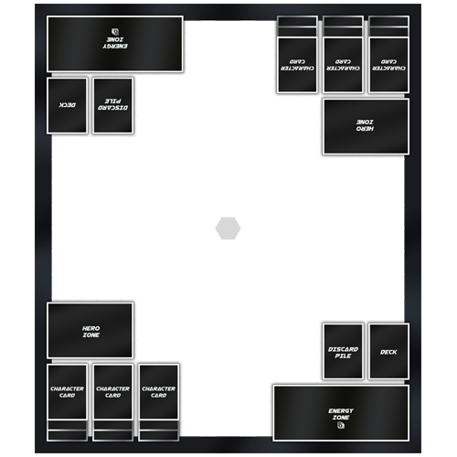
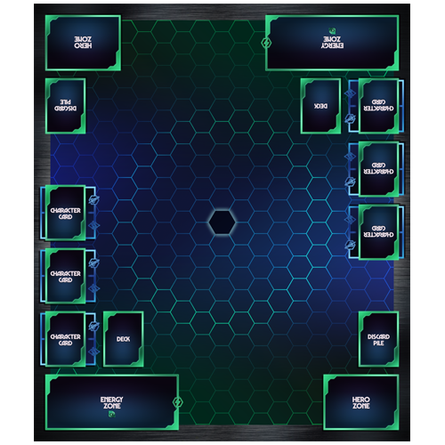
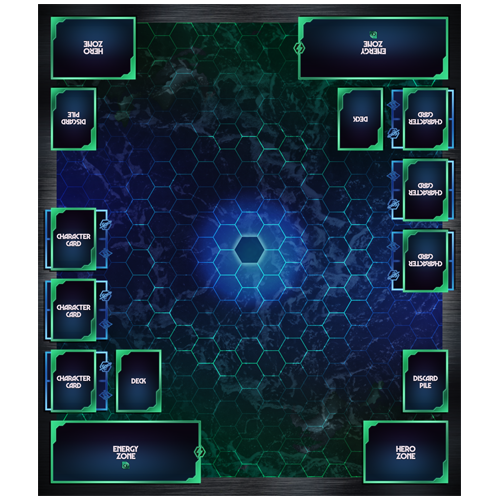
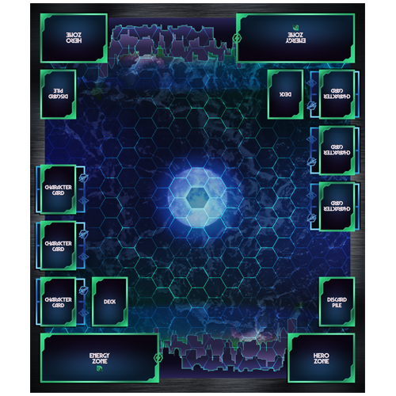

Designing The Card Zones

After coming up with a color palette, first thing is to make the card zones. these are measured to be 2.5"x3.5", the size of a standard playing card. Create simple rectangles for the whole space, then measure out a border on inner edge. Text and small "cool factor" elements are added.

With base design done, add colors to the borders. Using a gradient top left corner to bottom right corner gives the borders a metallic look, as opposed to a flat color.

Various touch-up work done. Inner/Outer glows added to give an illuminated appearance.
Finding a Layout
After all card zones are made, they are brought onto the master playmat file as PNGs to save file size. They are then all meticulously positioned to create a layout that is intuitive, but gives the most space possible.

Half of a playmat done. Once the first half is built, it is rotated 180 degrees to create the top half.

A design where card zones are pushed further to edges, user has to reach further across the table, but they have more room in the center.

A design that has card zones pulled closer to their user on each respective end. No longer have to reach as far across, but they lose space down the middle column of the mat.
Finalizing the Design

The background typically starts as basic colors with some gradients. I typically go for darker backgrounds, or colors that make the card zones pop out while also not hiding the hexagonal grid throughout the entire design.

Images and gradients are added on top of one another until the results are what is being looked for.

Further VFX are added until it's deemed finished. These files can reach as large as 1.5GB, as theyre 24" x 28" at 300 pixels per inch.
Once final touches are completed, the entire design is compiled as a PNG and given to whomever it is for.